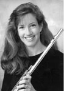

|  |
Susan Royal, Professor of Flute at the State University of New York College at Fredonia, performs regularly with the Buffalo Philharmonic, having performed in Carnegie Hall on their New York State tour. Dr. Royal has been a concerto soloist with the Knoxville Symphony, Ars Nova, Stony Brook Symphony, Erie Philharmonic, and the Fredonia Chamber Players/Western New York Chamber Players, the latter two of which she has been a member since 1983. She has performed with the Chautauqua Symphony, the New Haven Symphony, the Bach Aria Group at the Bach Aria Festival, and at the Roycroft, Bach and Beyond, June in Buffalo, and the New College Music Festivals. Dr. Royal, a member of the Fredonia Woodwind Quintet since 1983, has performed on National Public Radio in Boston, toured Europe with the Yale Philharmonia and performed a solo recital tour of Japan. She recently recorded for Mode Records, NYC, and collaborated on a CD entitled Freedom Flight, which was featured on a recital tour of Puerto Rico last October. She has published numerous articles and has been a performer, panelist, coordinator and/or judge at National Flute Association conventions since 1977. Recent NFA performances include a presentation by Samuel Baron on Bach arias at the '97 convention in New York, and a world premiere at the '99 convention in Atlanta. She has a Bachelor of Music degree from Ithaca College, Master of Music degree from Yale University and a Doctorate of Musical Arts degree from SUNY - Stony Brook. She has studied with Marcel Moyse, Julius Baker, Samuel Baron, Thomas Nyfenger, and in London, with Trevor Wye. |